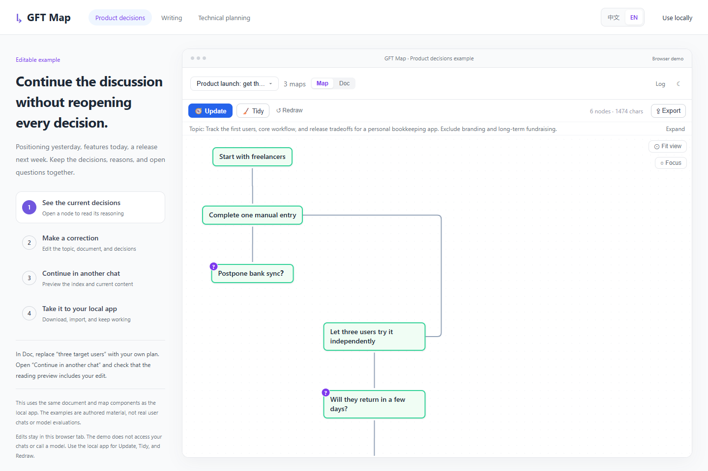
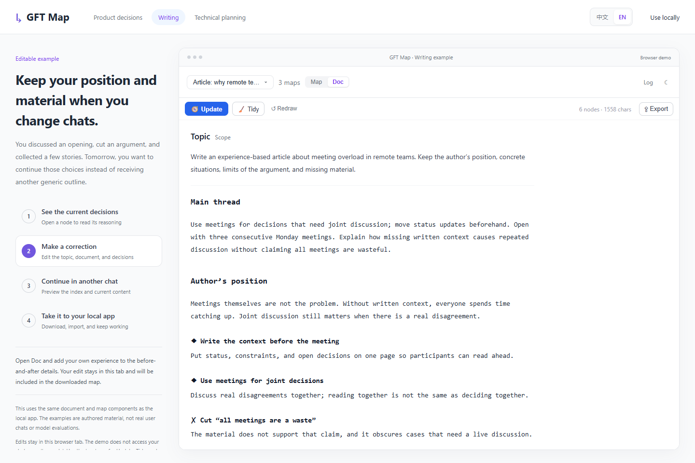
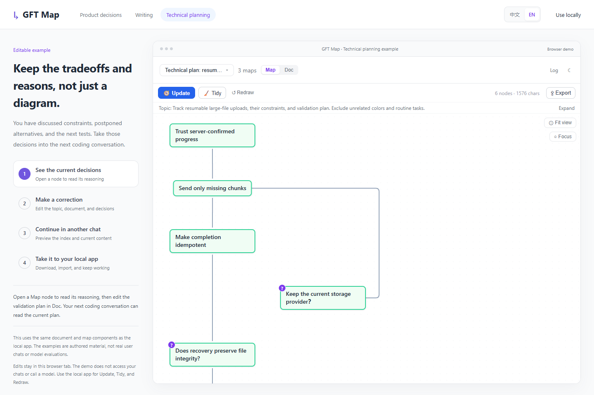

Product decisions
Why isn't bank sync in the first release?
Keep the scope, trade-offs, and next experiment together.
Explore the decisions ↗A new chat can lose track of earlier decisions and why you made them. You can't easily see what the AI remembers.
GFT Map turns your discussions into context you can inspect, correct, and carry into your next task.
Open source · Local storage · No GFT account required

Open the editable English example ↗Three editable examples. No installation needed.
Keep the scope, trade-offs, and next experiment together.
Explore the decisions ↗
Carry the author's position and unfinished ideas into your next writing session.
Edit the document ↗
Preserve the recovery flow, idempotency requirements, and deferred changes.
Explore the plan ↗Authored examples using the real app components, not user conversations or model evaluations. You can edit, inspect sources, and import or export. The demo does not call a model or access your chats.
Read the current understanding in Doc. Explore decisions and their relationships in Map. Received sources stay in Log.
Edit the topic, document, or nodes. Tidy when needed; redraw from saved sources when your scope changes.
The agent checks an index, then reads the content it needs. Your corrections are available on its next read; changes do not automatically wake the chat.
Copy the document, or download a complete map containing the topic, Doc, Map, and Log. Import it into your local app to keep working.
Try the round trip ↗Install the Skill, ask your agent to open GFT Map, and connect a conversation.
1. Install
npx skills add CoralLips/gft-map --skill gft-map --agent codex --globalThe installer requires Node.js 22.20+. Model actions require a configured agent executor.
2. Ask your agent
Use gft-map. Check the local environment, start the panel with an available executor, and give me its address. Help me connect a conversation and create a context map.
Codex execution has been tested with a real task. Reopen your session after installing the Skill if needed.
Installation and usageNo. Reading previews show the content an agent could read, not a generated response. Update, Tidy, and Redraw require the local app.
Chat sources are supported. Claude ACP execution and cross-client continuation remain experimental and require valid local authentication.
Yes. Signing in enables automatic two-way map sync, including deletions. Without signing in, maps stay local. Model actions send the necessary material to your configured model service.